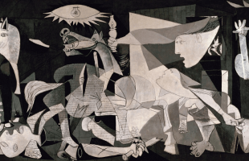

We paint crazy pictures!!!!
Our amazing pictures!!!!
Starry Night
Vincent Van Gogh
The Storm on the Sea of Galilee
Rembrandt
Lady with an Ermin
Leonardo da Vinci
The Boy in the Red Vest
Edward Hopper
Girl with a Pearl Earring
Johannes Vermeer
The Great Wave off Kanagawa
Hokusai
The Night Café
Vincent van Gogh
Arnolfini Portrait
Jan van Eyck

Guernica
Pablo Picasso
Van Gogh self-portrait
Vincent van Gogh
Mona Lisa
Leonardo da Vinci
The Sleeping Gypsy
Henri Rousseau
Penitent Magdalene
Artemisia Gentileschi
The Sleeping Gypsy
Henri Rousseau
The Basket of Apples
Paul Cézanne
The Swing
Jean-Honoré Fragonard